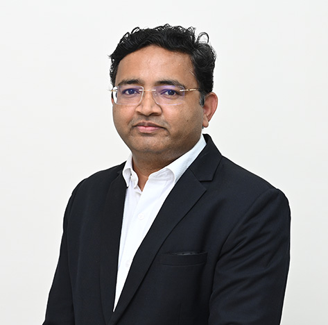

Prof. Dinesh Shivratan Bhutada
Program Director & Associate Professor

Program Director & Associate Professor
Dr. Dinesh Bhutada is an accomplished scholar and associate professor of Chemical Engineering at MIT World Peace University in Pune. He holds a Bachelor's, Master's, and PhD in Chemical Engineering, and has amassed 17 years of teaching and research experience. Dr. Bhutada is a prolific writer and presenter, having published more than 20 research papers in peer-reviewed journals and conferences, and holds 5 Indian Patents in Environmental Engineering. He is currently leading a RGSTC Funded research project and has completed 2 BCUD Funded research projects from University of Pune. He is also a core team member of MIT World Peace University's Admission Committee for UG and PG Admissions, and is instrumental in the development of the laboratory and curriculum. Additionally, he frequently interacts with industry leaders as placement coordinator and facilitates industry-institute collaborations.
Environmental Engineering, Advanced Separation processes, Material science, Energy Publication 1) Nur Ain Fitriah Zamrisham, Abdul Malek Abdul Wahab, Afifi Zainal, Dogan Karadag, Dinesh Bhutada, Sri Suhartini, Mohamed Ali Musa, Syazwani Idrus “State of the Art in Anaerobic Treatment of Landfill Leachate: A Review on Integrated System, Additive Materials, and Machine Learning Application.” Water Journal, Volume 15, Issue 7, 1303 (Impact Factor: 3.530) Q-1 Journal 2) P Kurhade, S Kodape, K Junghare, PG Bansod, Dinesh Bhutada, “Development of MgO nanoparticles via green synthesis at varying concentrations of precursor and mahua flower extract” Inorganic and Nano-Metal Chemistry, April 2022, Taylor and Francis Ltd., Impact Factor: 1.60 https://doi.org/10.1080/24701556.2022.2068581 Q4 (JCR) SCIE 3) Minal Deshmukh, A.B. Marathe, Dinesh Bhutada, The Study of Bio-Fuel Generation and Characteristics Analysis from Jatropha, Karanja and Styrax Officinalis L Seed Cakes, Distributed Generation & Alternative Energy Journal, July 2021, Vol. 36 3, 301–334. doi: https://doi.org/10.13052/dgaej2156-3306.3636 Q4 (JCR) SCIE 4) Niraj S. Topare, Dinesh B. Bhutada, Praful G. Bansod, “Ultrasonic Degradation Of Rhodamine-B In Presences Of Tio2 And Nb2O5”, paper submitted to Material Today: Proceedings, Volume 51, Part 1, 2022, Pages 125-128 https://doi.org/10.1016/j.matpr.2021.05.015 5) P. G. Banssod, Dinesh Bhutada, S.S.Barkade "Biodiesel Production From Nagpur Thermal Power Plant Ash Used As Catalyst” Indian Journal of Environmental Protection, September 2020 Vol 40, No.9, 921-926 6) 13. P Katkar, I. Sancheti, D. S. Bhutada, A. Rajput, S. Thorat, S. Radhakrishnan, A. Sabnis, P.A. Mahanwar and M. B. Kulkarni, “Card phenol based benzoxazine resin and its blends with epoxy and saturated polyester for coating application” Surface Coating International, Vol 6, Dec 2020, 108-115 Google scolar link https://scholar.google.com/citations?user=O1CLF3oAAAAJ&hl=en Scopus link https://www.scopus.com/authid/detail.uri?authorId=57210574851 Orcid Link 0000-0002-0282-4017
Profiles